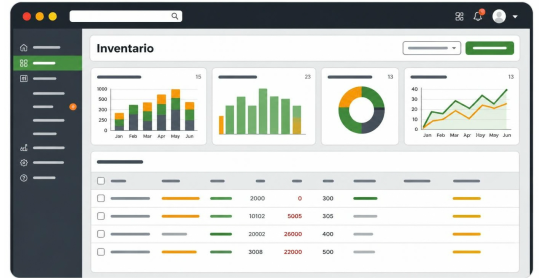
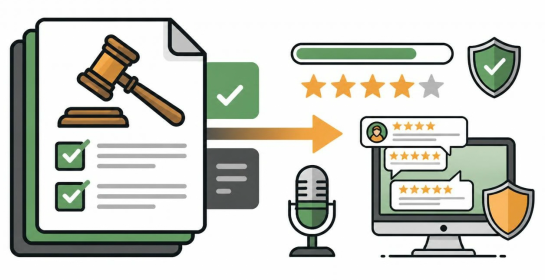

Servicios Destacados
Cada servicio se puede contratar por separado o combinado, según lo que necesite tu cuenta de Amazon Seller Central.
Verificación de inventario

Detectamos, reportamos y solicitamos reembolsos a tiempo de productos dañados en almacén o en tránsito antes de que impacten tu rentabilidad.
Monitoreo de salud de cuenta

Revisamos diariamente el estado de tu cuenta (Account Health) e identificamos alertas activas, para actuar a tiempo y evitar la suspensión de tus listings.
Monitoreo de reseñas

Hacemos seguimiento activo de las reseñas de tus compradores para detectar problemas de reputación antes de que escalen.
Comparativa de servicios
| Servicio | Qué revisamos | Frecuencia | Qué recibís |
|---|---|---|---|
| Verificación de inventario | Productos dañados o perdidos en almacén y en tránsito | Semanal | Reporte de unidades y reclamos de reembolso |
| Monitoreo de salud de cuenta | Account Health, alertas e infracciones activas | Diaria | Resumen de alertas y plan de acción |
| Monitoreo de reseñas | Reseñas nuevas y calificaciones por producto | Diaria | Aviso de reseñas críticas y recomendaciones |